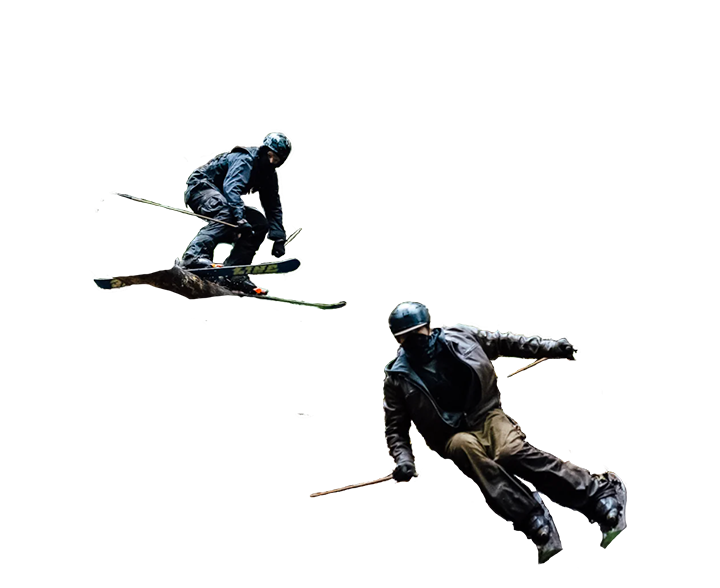
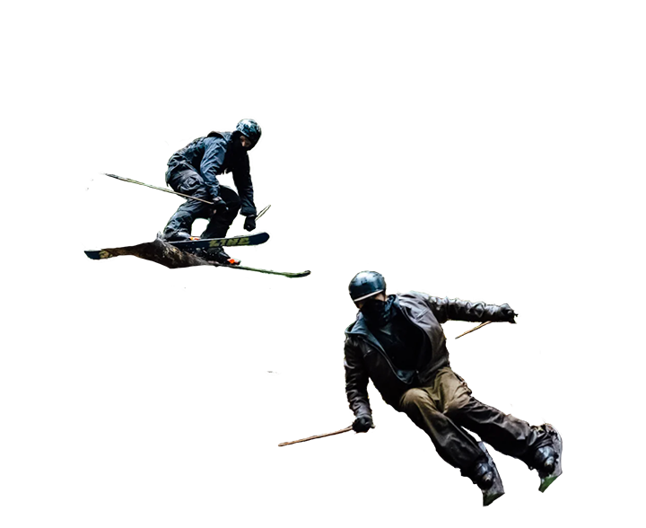

Downhill Racer
1969

Starring Robert Redford, Gene Hackman, and Camilla Sparv. "Quietly cocky Robert Redford joins the U.S. ski team as a downhill racer and clashes with the team's coach, played by Gene Hackman. Lots of good skiing action leading to an exciting climax." -IMDb. The skiing was performed by stunt-double’s, although Redford is a good skier and owns Sundance ski area in Utah.
On Her Majesty's Secret Service
1969
Starring George Lazenby, Diana Rigg, Telly Savalas, Bernard Lee, Gabriele Ferzetti, Ilse Steppat, with ski stunts by Luki Leitner and Vic Armstrong. "James Bond woos a mob boss's daughter and goes undercover to uncover the true reason for Ernst Stavro Blofeld's allergy research in the Swiss Alps involving women from around the world".- IMDb. This iconic ski scene starts with the famous panoramic view, Piz Gloria, located at the 2,970-meter Schiltorn, Bernese Oberland, Switzerland. The actual ski chase occurs in Saas-Fee, another Swiss ski area in the canton Wallis. The image on the right shows how the director dangled the videographer from a helicopter to film the ski scenes. Modern equipment, such as drones going to such lengths to get the shot is mostly unnecessary.
The Spy Who Loved Me
1977


Starring Roger Moore, Barbara Bach, Curt Jürgens, Richard Kiel, Caroline Munro with ski stunts by base jumper, Rick Sylvester. "James Bond investigates the hijacking of British and Russian submarines carrying nuclear warheads, with the help of a K.G.B. agent whose lover he killed." - IMDb. This ski escape resembles the one in On Her Majesty's Secret Service. Ski escapes become a common theme in a couple of Bond films. This ski escape was filmed at St. Moritz, Switzerland, and featured a ski jump performed by professional base jumper Rick Sylvester.

Apocalypse Snow
1983

Directed by Didier Lafond "Villainous monsieurs try to capture the hero snowboarder to steal the secrets of skiing."- IMDb. The film is loosely based on Apocalypse Now in terms of the plot. The film is full of 80s nostalgia and creative energy. The amount of mono skiers in this movie is over the top.

G.N.A.R.
2011
"Born in the minds of Robb and Scott Gaffney (who directed the film) and the iconic Shane McConkey, The Game of G.N.A.R. (Gaffney's Numerical Assessment of Radness) has become a legendary, cult-like part of ski culture all over the world, and this film is the reason why. "- Forecast Ski. After Shane McConkey's death, a movie was created to honor the game he and his friends created, called G.N.A.R. Gnar is short for gnarly and is a term often used by skiers, snowboarders, and surfers to describe how dangerous something is.

Molly's Game
2017

“Starring Jessica Chastain, Idris Elba, Kevin Coster, Michael Cera, Jeremy Strong, Chris O'Dowd, and Bill Camp "The true story of Molly Bloom, an Olympic-class skier who ran the world's most exclusive high-stakes poker game and became an F.B.I. target."-IMDb. The film exaggerates Molly's willingness to participate in an illegal gambling ring but captures the dramatic end of her skiing career and the following events.

xXx: The Return of Xander Cage
2017
 

Starring Vin Diesel, Donnie Yen, Deepika Padukone, Kris Wu, Ruby Rose, Tony Jaa, Nina Dobrev, Toni Collette, and Samuel L. Jackson with ski stunts by LJ Strenion, Thayne Rich, and Karl Fostvedt. "Xander Cage is left for dead after an incident, though he secretly returns to action for a new, tough assignment with his handler Augustus Gibbons."- IMDb. Like all movies with skiing in them, this movie required stunt double’s. Of course, this movie uses special effects and a green screen, but not to perform the ski scene. Real skiers performed the jumps in the summer. They built jumps out of wood frames and threw them down. Powder Magazine has a great article (https://www.powder.com/stories/welcome-to-the-jungle) on it if you want to learn more about the behind-the-scenes.